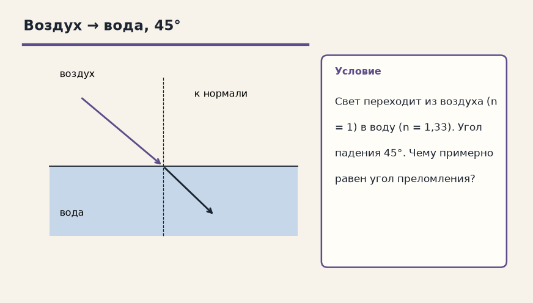
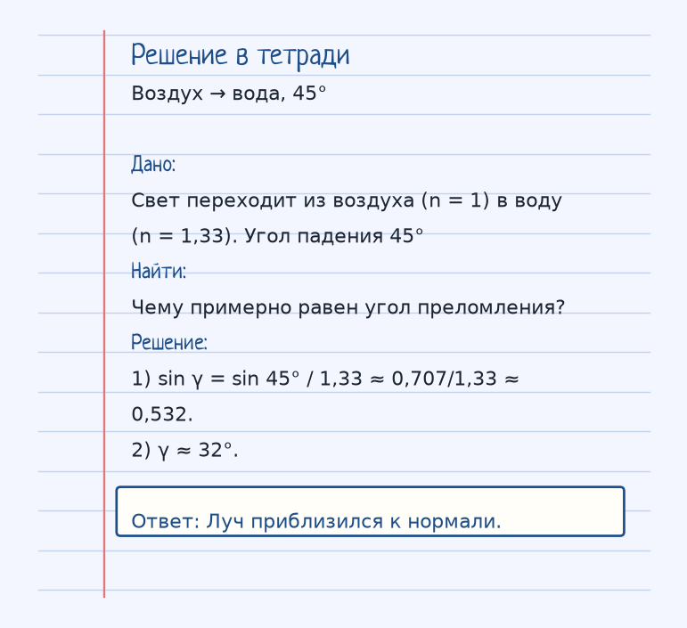
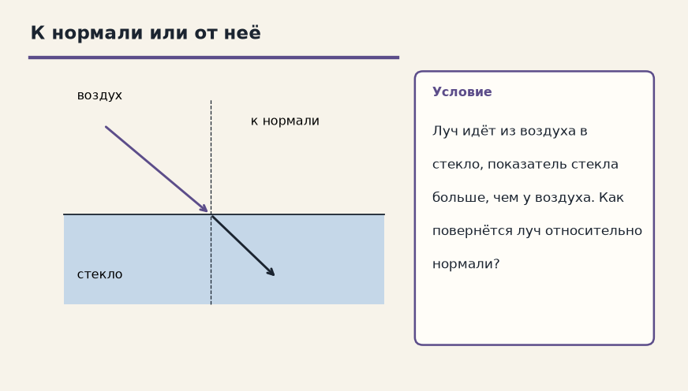

Глаз врёт спокойно. Спроси, куда на самом деле пошёл луч и что было на границе. Ниже — как устроена тема «Закон преломления (Снеллиуса)», где обычно спотыкаются, и два разбора до ответа.

Показ к теме. Это условие, не шпаргалка.
Сначала смысл
При переходе света из одной среды в другую его скорость меняется, и луч меняет направление.
На границе двух сред меняется скорость, и если луч пришёл не по нормали, меняется и направление. Закон Снеллиуса: sin α / sin γ = n = c/v. Для перехода из воздуха (n ≈ 1) в среду sin α / sin γ = n_среды, или sin γ = sin α / n.
В более плотную оптически среду (n больше) луч прижимается к нормали, угол становится меньше. В менее плотную — отходит от нормали. Пример карточки: воздух в воду, n = 1,33, α = 45°, sin 45° ≈ 0,707, sin γ = 0,707/1,33 ≈ 0,532, γ ≈ 32°. Луч прижался к нормали.
Ложка в стакане кажется изломанной именно из-за этого излома на границе вода–воздух, а не из-за отражения и не из-за полного внутреннего отражения.
Как решать. Выпиши величины с рисунка к примеру «Воздух → вода, 45°». Условие: Свет переходит из воздуха (n = 1) в воду (n = 1,33). Угол падения 45°. Чему примерно равен угол преломления? Дальше подставляй их в формулу этой темы и сверяй шаги с решением под картинкой — оно закрыто, пока не попробуешь сам. Второй рисунок, «К нормали или от неё», тот же приём на других данных: Луч идёт из воздуха в стекло, показатель стекла больше, чем у воздуха. Как повернётся луч относительно нормали? Если оба примера сходятся, тему можно нести на контрольную.
α — угол падения, γ — угол преломления, n = c/v — абсолютный показатель. Из воздуха в среду sin γ = sin α / n.
Чтобы осталось в голове
Машина, которая въезжает с асфальта в грязь под углом. Одно колесо тормозит раньше — машина разворачивается в сторону тормозящего колеса (это и есть преломление).
Машина съезжает с асфальта в грязь под углом: одно колесо уже тормозит, и нос разворачивает в сторону медленной среды.
Где обычно спотыкаются
В более плотную среду угол с нормалью уменьшается, а не растёт. И ложка в воде — про преломление, не про зеркало.
Дальше две задачи. Сначала схема. Когда сам набросаешь ход, открой тетрадь — там дано, перевод в СИ, шаги и ответ в рамке.
Разбор 1
Воздух → вода, 45°
Свет переходит из воздуха (n = 1) в воду (n = 1,33). Угол падения 45°. Чему примерно равен угол преломления?
На схеме только условие. Ответа там нет — его ещё надо получить.
Смотри на порядок, не на красивое число: сначала единицы, потом формула, потом ответ.
Дано. Свет переходит из воздуха (n = 1) в воду (n = 1,33). Угол падения 45°
В СИ.
Найти. Чему примерно равен угол преломления?
Решение.
sin γ = sin 45° / 1,33 ≈ 0,707/1,33 ≈ 0,532.
γ ≈ 32°.
Луч приблизился к нормали.

Разбор 2
К нормали или от неё
Луч идёт из воздуха в стекло, показатель стекла больше, чем у воздуха. Как повернётся луч относительно нормали?

На схеме только условие. Ответа там нет — его ещё надо получить.
Смотри на порядок, не на красивое число: сначала единицы, потом формула, потом ответ.
Дано. Луч идёт из воздуха в стекло, показатель стекла больше, чем у воздуха
В СИ.
Найти. Как повернётся луч относительно нормали?
Решение.
Среда оптически плотнее, угол с нормалью уменьшается, луч прижимается к нормали.
Среда оптически плотнее, угол с нормалью уменьшается, луч прижимается к нормали.